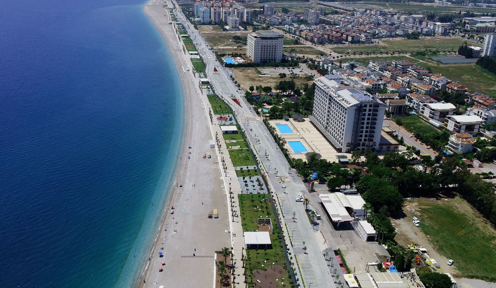

Deniz, kuym, güneş. sahil boyunca keyifli yürüyüşler. İşte Antalya. Sıcak ve güneşli bir kıyı şehri.
Sıcakları sevenler için ideal bir destinasyon. Sahil boyunca yürüyüş yaparken Akdeniz'in serin esintisini hissedebilirsiniz.
Sıcak sevmiyorsanız eğer MAYIS veya EYLÜL ayında gelin.
Antalya'nın sahilleri, berrak suları ve güzel plajlarıyla ünlüdür. Dünyaca ünlü Konyaaltı Plajı ve Lara Plajı gibi popüler plajlar, ziyaretçilere güneşlenme, yüzme ve su sporları yapma imkanı sunar.

NOT: Bu harita Leaflet ile gösterilmiştir.